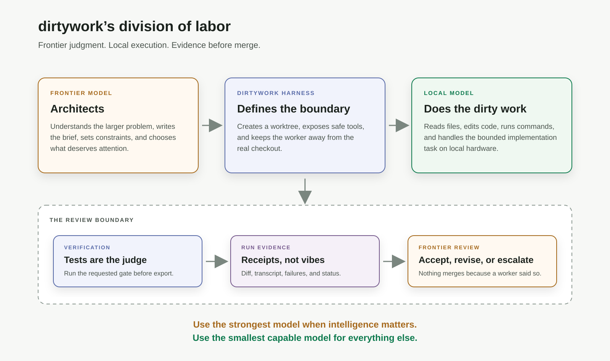

Opinion · 2026-08-24
You Don’t Need a Chainsaw for Every Cut
Why dirtywork uses frontier models for judgment and local models for execution: proportional intelligence, responsible compute, and evidence before merge.
I like frontier models. They can hold a large system in their head, reason across unfamiliar code, spot architectural seams, compare competing approaches, and review a change with the kind of context that smaller models often lack. When the problem is difficult or ambiguous, I want the best reasoning available. But I don’t want to use one for every keystroke.
You don’t need a chainsaw to cut a piece of string. The chainsaw is more powerful — it is also louder, heavier, more expensive, and a terrible fit for the job. That is the idea behind dirtywork.
Use the strongest model when intelligence materially changes the outcome. Use the smallest capable model for everything else.
The false choice
The current conversation often frames AI development as a choice between two extremes:
- Use a frontier model for everything.
- Use local models for everything.
The first option gives you excellent reasoning, but every task carries the cost of a frontier inference: money, latency, capacity, and energy. The second option gives you privacy, control, and effectively free marginal usage on hardware you already own — but local models are not frontier models. They are more likely to lose the thread, misunderstand a broad request, or make a confident change in the wrong place. The useful answer is neither extreme; it is to give different models different jobs.

Frontier judgment, local labor
dirtywork is built around a simple division of labor:
| Role | Responsibility |
|---|---|
| Frontier model | Understands the larger problem, defines the task, reviews the result, decides whether to escalate |
| Local model | Explores the repository, edits files, runs tests, and performs bounded implementation work |
| Harness | Provides isolation, tools, verification, transcripts, and the authority boundary |
The local model does not need to be as good as the frontier model at everything. It needs to be good enough at a specific, constrained task. “Add tests for these six functions, follow this existing style, and run this command” is a very different problem from “redesign the billing system.” The first is a good job for a local worker. The second deserves frontier attention.
This is not a claim that local models have replaced frontier models. They haven’t. The point is that replacement is the wrong goal and specialization is the right one.
The model is not the agent. The harness is.
A model can be helpful without being authoritative, and that distinction is the most important part of dirtywork. A dirtywork run does not hand a local model the real checkout and ask it to do whatever seems appropriate. It gives the worker a bounded task, an isolated worktree, a constrained set of tools, and a place to write its changes. The worker produces a candidate change, and then the result is inspected:
frontier brief
↓
bounded local execution
↓
tests and verification
↓
diff, transcript, and evidence
↓
frontier review
↓
accept, revise, or escalate
There is no automatic merge. The worker does not get the final word. The run leaves behind a worktree, a transcript, a diff, and the results of whatever verification was requested. That changes the question from:
“Do I trust this model?”
to:
“What did this model do, and what evidence do I have?”
That is a much more useful question. The dirtywork README describes this as frontier models doing the thinking while local models do the dirty work. The mechanics matter: isolated worktrees, Docker sandboxing, no automatic commits, resumable runs, review feedback, machine-readable transcripts, and explicit verification gates. The harness is what turns a model from an authority into a worker.
Responsible compute
There is a responsible-use argument here, but I want to make it carefully. I am not claiming that every local model run is automatically greener than every cloud inference — hardware has an energy cost, manufacturing has a cost, and datacenters can be extremely efficient at some workloads. The narrower claim is harder to argue with:
Unnecessary frontier inference is not free.
If a local model can safely write a test, update documentation, apply a mechanical migration, or investigate a bounded failure, there is no reason to send every one of those steps through the largest available model. Responsible AI should include compute proportionality:
- Use high-capability models for architecture, ambiguity, and high-consequence decisions.
- Use smaller or local models for bounded, reversible, inspectable work.
- Use ordinary tools for deterministic operations whenever a model is unnecessary.
- Escalate when evidence shows that the worker is stuck or the task has become uncertain.
- Keep a person responsible for what actually merges.
The goal is not to avoid powerful models. It is to stop treating maximum intelligence as the default setting for every task.
The economics of review
There is one important constraint: the local worker has to produce a small enough result that review remains cheaper than doing the work yourself. If a worker changes 400 unrelated files, generates a huge explanation, and leaves you with an archaeological dig, the economics are gone — you have saved model cost only to spend human attention.
That is why bounded tasks matter. A good delegated task has:
- a clear target;
- a narrow scope;
- explicit non-goals;
- a known verification command;
- a reviewable diff;
- a clear definition of done.
The smaller the review surface, the more useful the delegation becomes. This is also why dirtywork does not try to make the local worker look autonomous. Autonomy is not the product; controlled execution is.
What happened when we actually tried it
The first version of dirtywork was designed, built, reviewed, and shipped using the same pattern it implements. A frontier model planned the work and reviewed the output, local models handled the implementation, and the changes went through isolated worktrees and repeated verification.
The first production run was supposed to add unit tests to an invoicing application. The local worker did that job successfully. The tests also exposed a real cent-level rounding bug in invoice math that had been sitting in production.
The local model did not “solve software engineering.” It did something more useful: it performed a bounded task, produced a visible result, and helped a stronger reviewer find a problem. That is the shape of work I want from these systems — not magic, receipts.
In another dirtywork development run documented in What the Meter Said, a local model performed hundreds of turns of repository exploration and implementation while the frontier side concentrated on planning, review, and cross-task reasoning. The frontier tokens did not disappear; they moved toward the places where judgment mattered more.
The receipts are still coming in. Earlier today the released dirtywork — 0.10.1 from PyPI, not the checkout — built a 1.0 feature on its own repository: the bash tool now accepts a timeout written as "60s", which is what a local model had been sending all along. qwen3-coder-next did the typing inside the Docker sandbox with the full test suite as the gate, and Claude wrote the brief and the reviews. Six runs, 188 turns, 4.2 million local tokens, $0, and the suite went from 1,359 tests to 1,386. The reviewer earned its keep once: the worker’s first cut called int() on an unbounded run of digits, which is a run-ending ValueError on Python 3.11 and invisible on the 3.9 machine it was built on — that went back to the worker as feedback and came back fixed. And the worker earned an asterisk once: handed the pull-request review as feedback, it called finish on its first turn without changing a line, re-declaring the summary from the run before. A second try got halfway, Claude finished the last two items, and the pull request says so — as does the ledger, next to the numbers.
That is the distinction. We are not trying to remove the expensive model from the process — we are trying to stop spending its attention on work that does not require it.
This idea is bigger than dirtywork
The broader pattern is not unique to dirtywork. Anthropic describes an orchestrator strategy, where a stronger model decomposes a task and delegates bounded subtasks to less expensive workers. Aider has an architect/editor mode, separating high-level reasoning from file-editing execution. Other teams are exploring local models alongside frontier advisors.
That is good news — it means the industry is beginning to recognize that “one model does everything” is not the only design. dirtywork’s particular opinion is that the local worker should be:
- first-class rather than an afterthought;
- model-agnostic;
- isolated by default;
- reviewable after every run;
- measurable through its transcript and verification results;
- allowed to fail without damaging the real checkout;
- escalated when it reaches the edge of its competence.
The interesting product is not simply a router that chooses a model. It is a system that knows what authority to give that model.
Proportional intelligence
I don’t want dirtywork to become another chat interface with a terminal attached — I want it to become an execution layer for a more deliberate kind of software work. The frontier model should be able to say:
“This is the problem. This is the bounded piece of it. These are the constraints. This is how we will know whether the result is correct.”
The local model should be able to say:
“I inspected the files, made the change, ran the checks, and here is exactly what happened.”
The harness should be able to say:
“Here is the diff. Here is the transcript. Here is the verification result. Nothing has merged.”
That division of labor is not anti-frontier, it is pro-judgment; not anti-AI, it is pro-appropriate-tool. And it is not about pretending that local models are perfect — it is about designing a system where they can be useful without having to be perfect.
Frontier judgment. Local labor. Deterministic evidence. Responsible compute.
You don’t need a chainsaw for every cut. Sometimes the right tool is already running on the machine beside you.
Previous: The Reviews Outranked the Spec — the release where the approved spec kept losing arguments.
Drafted with ChatGPT from my notes; fact-checked and reviewed with Claude (Fable 5); edited by me.
dirtywork is open source at github.com/JimboSchneider/dirtywork. Contributions, model reports, benchmarks, and real-world failure stories are welcome.